Aktuálna ponuka
16 nehnuteľností, predovšetkým byty, rodinné domy, pozemky. Každá má vlastnú stránku s fotkami, popisom a mapou.
Prezrieť ponukuLukáš SopkoRealitný maklér
Realitný maklér · Diamond Reality
Predaj a prenájom nehnuteľností · Košice, Čaňa, Nováčany
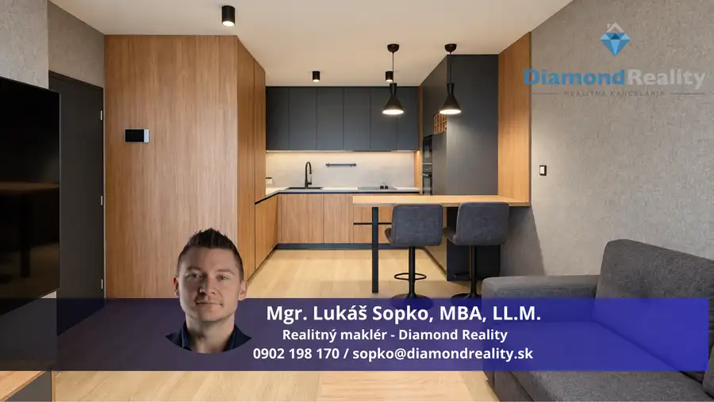
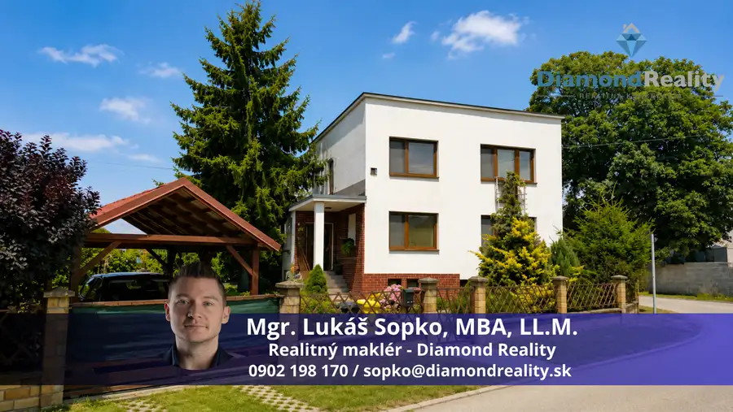
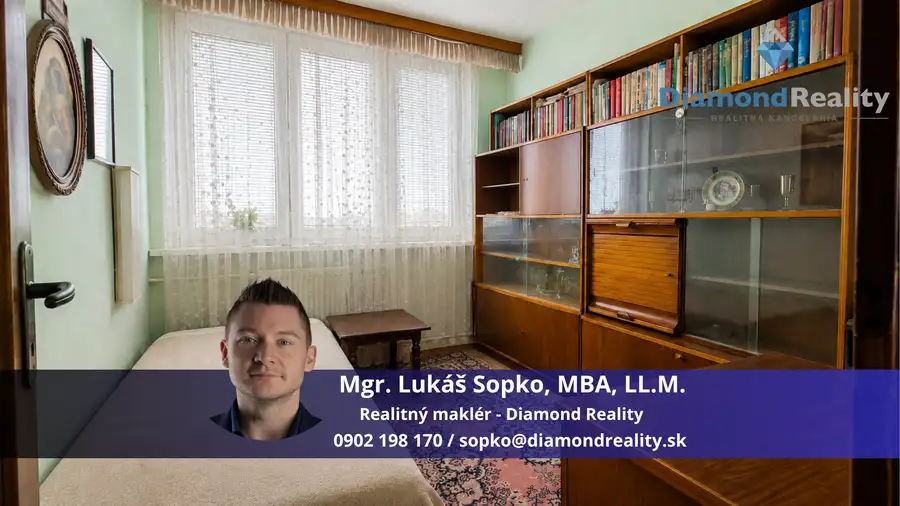
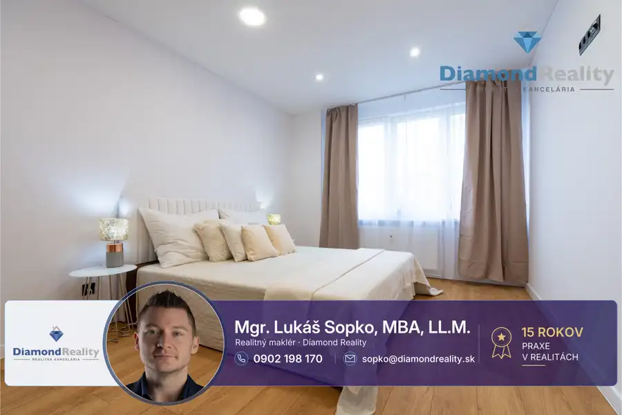
Byt8 239 990 €Na predaj 3 izbový byt na ulici Postupimská, Košice - Dargovských hrdinov. Dargovských hrdinov, Košice 3-izbový67 m²5. podlažie 🌟 Na predaj 3-izbový byt košického typu na ulici Postupimská, Košice – Dargovských hrdinov.Spoločnosť Diamond Reality Vám ponúka na predaj krásny,…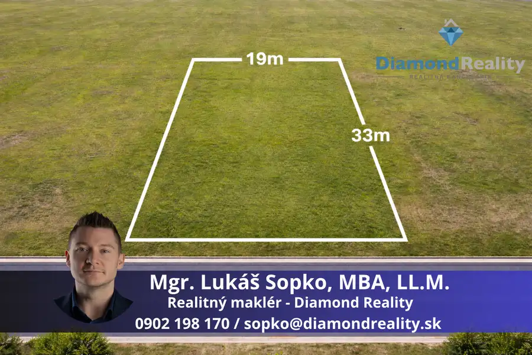
Pozemok5 113 000 €Na predaj perfektný stavebný pozemok v obci Nováčany, Košice - okolie Nováčany 621 m² Ponúkam na predaj veľmi pekný a rovinatý stavebný pozemok o výmere 621 m² v obci Nováčany, vhodný na výstavbu rodinného domu. Pozemok má priamy…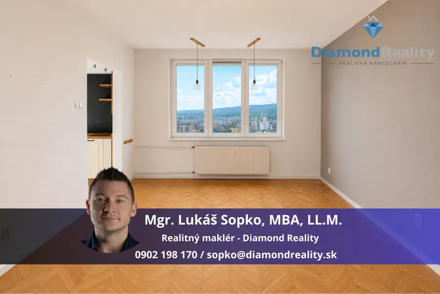
Byt10 1 100 €Na prenájom pekný 3-izbový byt s lodžiou, Alvinczyho ulica, Košice - Sever Sever, Košice 3-izbový76.26 m²11. podlažie Hľadáte priestranný 3-izbový byt na prenájom v jednej z najvyhľadávanejších lokalít Košíc? ✨ Mám pre Vás EXKLUZÍVNE v ponuke krásny, slnečný 3-izbový…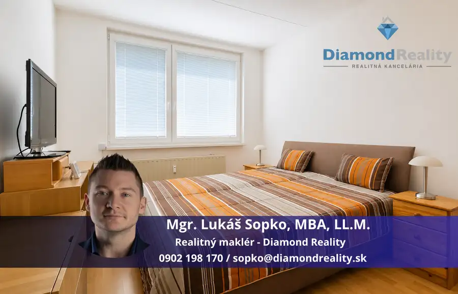
Byt10 239 990 €Na predaj slnečný - 3 izbový byt pražského typu na ulici Turgenevova, Košice - Juh Juh, Košice 3-izbový68 m²6. podlažie 💎 Diamond Reality Vám exkluzívne ponúka na predaj priestranný 3-izbový byt vo vyhľadávanej lokalite Košice – Juh, na ulici Turgenevova.✨ Hľadáte byt,…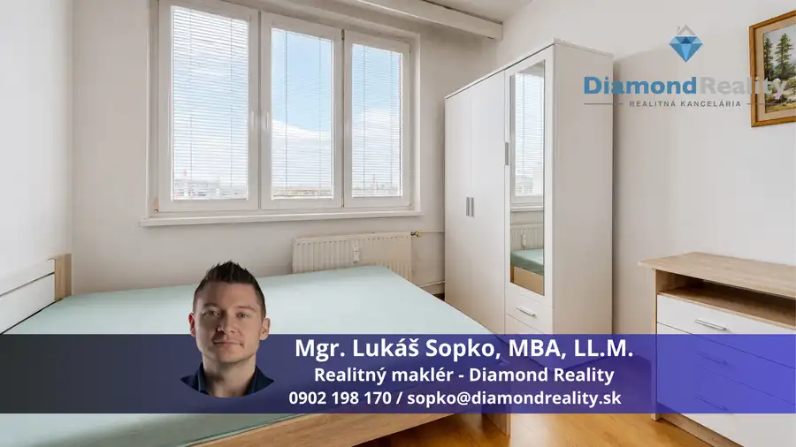
Byt10 196 000 €Na predaj 3 - izbový byt na Železníkoch, Užhorodská ulica, Košice Juh, Košice 3-izbový68 m²8. podlažie Diamond Reality Vám exkluzívne ponúka na predaj priestranný 3-izbový byt na Užhorodskej ulici v obľúbenej mestskej časti Košice – Železníky.Ak…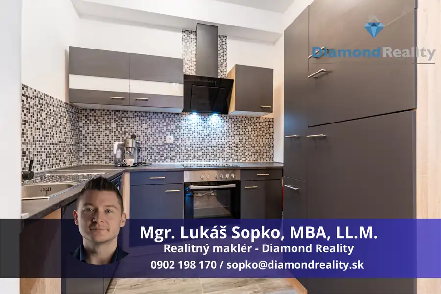
Byt10 259 000 €Predaj 2-izbového bytu | zelená stráň | 1 pivnica | terasa | vnútorné parkovanie Košická Nová Ves, Košice 2-izbový51.73 m²2. podlažie NA PREDAJ MODERNÝ 2-IZBOVÝ BYT | ZELENÁ STRÁŇ | 1 PIVNICA | TERASA | VNÚTORNÉ PARKOVANIEMgr. Lukáš Sopko a spoločnosť Diamond Reality Vám ponúkajú na…Tomuto výberu zatiaľ nezodpovedá žiadna ponuka. Napíšte mi, čo hľadáte.
Volám sa Lukáš Sopko. Som realitný maklér kancelárie Diamond Reality a pôsobím predovšetkým v lokalitách Košice, Čaňa, Nováčany a Smolník (Košický kraj).
16 nehnuteľností, predovšetkým byty, rodinné domy, pozemky. Každá má vlastnú stránku s fotkami, popisom a mapou.
Prezrieť ponuku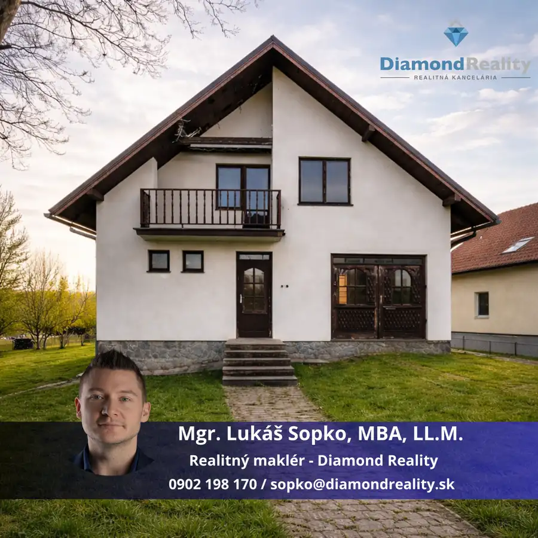
Košice, Čaňa, Nováčany, Smolník, Zemplínska Teplica a okolie. Ponuku si môžete prezrieť podľa lokality.
Nehnuteľnosti v lokalite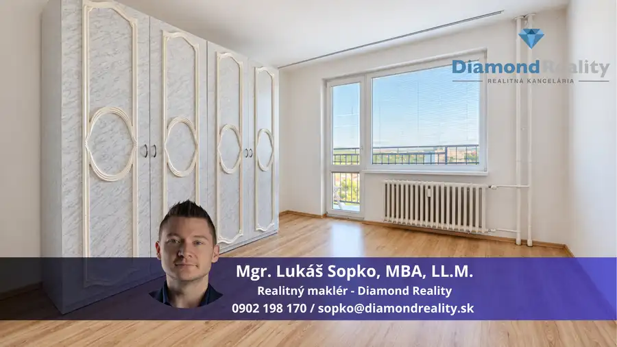
Odhad trhovej ceny, príprava prezentácie, obhliadky, zmluvy a odovzdanie nehnuteľnosti.
Dohodnúť stretnutieKaždý špendlík je jedna nehnuteľnosť z mojej ponuky. Kliknite a pozrite sa.
© prispievatelia OpenStreetMap
Na čo sa pýtate najčastejšie, skôr než sa stretneme.
Odhad trhovej ceny vychádza z aktuálnych ponúk a predajov v lokalite, nie z cenníkových tabuliek. Podmienky Vám poviem pri prvom telefonáte.
Najprv obhliadka a odhad ceny, potom príprava prezentácie (fotografie, popis, inzercia), obhliadky so záujemcami, rezervačná zmluva, kúpna zmluva, návrh na vklad do katastra a odovzdanie nehnuteľnosti. O každom kroku viete vopred.
Najrýchlejšie cez WhatsApp alebo telefón. Termín stretnutia alebo obhliadky dohodneme podľa Vás.